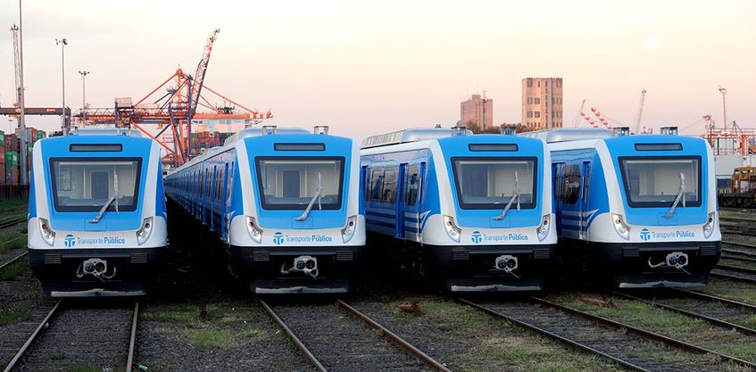

Trenes Sarmiento
Información, horarios, tarifas, recorridos, ramales y estaciones.

Este sitio tiene como objetivo brindar información sobre el Tren Sarmiento para ayuda de los pasajeros y usuarios.
El Tren Sarmiento es el principal medio de transporte para trasladar pasajeros entre la Ciudad de Buenos Aires y el oeste del conurbano bonaerense.
Aquí podés consultar los horarios del Tren Sarmiento, conocer el recorrido completo entre Once y Moreno, ver todas las estaciones del ramal y consultar los precios del boleto.
Información rápida
Consejos útiles para tu viaje: planificá con antelación, revisá el estado del servicio antes de salir y respetá las indicaciones en estaciones.
- Estaciones más concurridas: Once, Floresta, Liniers, Morón, Moreno.
- Horarios pico: mañana 7:00–9:30; tarde 17:00–19:30.
- Contacto de atención al pasajero: ver sección Contacto.
Historia del Tren Sarmiento
El ramal Sarmiento tiene sus orígenes en el siglo XIX, cuando se trazaron las primeras vías para conectar la Ciudad de Buenos Aires con el oeste del conurbano. A lo largo de las décadas, el servicio fue modernizándose y adaptándose a las necesidades de millones de pasajeros.
Entre hitos importantes se cuentan la electrificación parcial de tramos, la ampliación de estaciones y las obras de renovación de vías y material rodante. El tren ha sido clave para el desarrollo urbano y la movilidad diaria de la región.
Hoy, el Tren Sarmiento combina historia y servicio público, y sigue siendo un eje fundamental para la conectividad entre Once y Moreno.